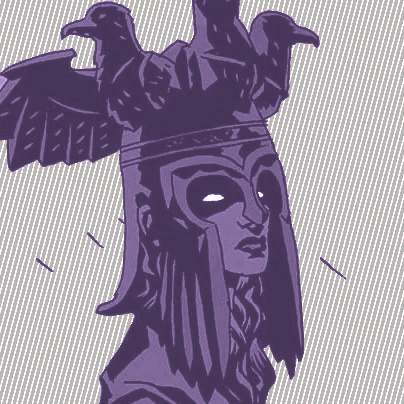

V E R S A L I M I N A L
[~/dev/projects]
[main*]
»
task enum
total 8
| project | links | description | technologies |
|---|---|---|---|
| lab | github | Extensive home lab | k8s,proxmox,truenas,pfsense |
| demiurge | github | Dev exploration project | go,helm,openapi,sqlc,atlas |
| pub-tools | github | Tools for publishing TTRG and other content | latex,python |
| mythic-witches | github | A module for Mythic Bastionland | latex,pub-tools |
| 28z | github | An experimental RPL type language and VM | go |
| worsen | github | A simple tool for making images worse | rust |
| contested | TBD | (WIP) Site to encourage contesting uncontested elections | web,TBD |
| edible-rich | github,www | A joke site showing income disparity | web |
| public-site | github,www | This site | web |
[~/]
[main]
»
yq '.' about.yaml
---
author:
name: Quinn Aletheia McCaffrey
pronouns: she/they
location: Austin, TX
work:
occupation: Sr. Software Engineer, General Tinkerer
resume: resume.pdf
author:
name: Quinn Aletheia McCaffrey
pronouns: she/they
location: Austin, TX
work:
occupation: Sr. Software Engineer, General Tinkerer
resume: resume.pdf
[~/misc]
[none]
»
pandoc -f markdown -t html stuff.md
misc things
- rides @ strava
- models @ printables
- mtg decks @ archidekt
